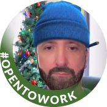

|  | Eduard ProtopMy philosophy is to build it, break it and then rebuild it better. That thinking is at the core of how my approach testing. I write scripts to automate testing and create tools so developers can test their own code. As a Test Engineer,I identify weak spots and constantly design better and creative ways to break software and identify potential problems. |
| Dates | Work |
|---|---|
| 2022 | Mobile Test Engineer at VK |
| 2020-2022 | Software QA Engineer at Domnovate |
| 2018-2020 | Software QA Engineer at Robert Haif |
| 2014-2017 | QA Engineer at Agrotorg |
| 2007-2013 | Desktop Support Engineer at Volgocemmash |
|
|